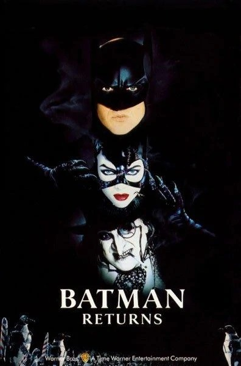

Batman 1989

El caballero oscuro conocido como Batman defiende a la corrupta e insegura ciudad de Gotham de su enemigo principal, un payaso homicida conocido como Joker.
Batman Returns 1995
La ciudad de Gotham está amenazada por dos hombres: 'El Caras' y un psicópata que ha inventado un estrafalario aparato que permite absorber las ondas cerebrales de los seres humanos. Ambos se unirán para lograr sus propósitos.
Batman y Robin

Batman y su compañero Robin deben enfrentarse a un nuevo villano, el Sr. Frío, que intentará congelar a todos los habitantes de Gotham.
Batman Inicia

Bruce Wayne vive obsesionado con el recuerdo de la muerte de sus padres. Atormentado, se va de Gotham y encuentra a un extraño personaje que lo entrena en todas las disciplinas físicas y mentales que le servirán para combatir el Mal.